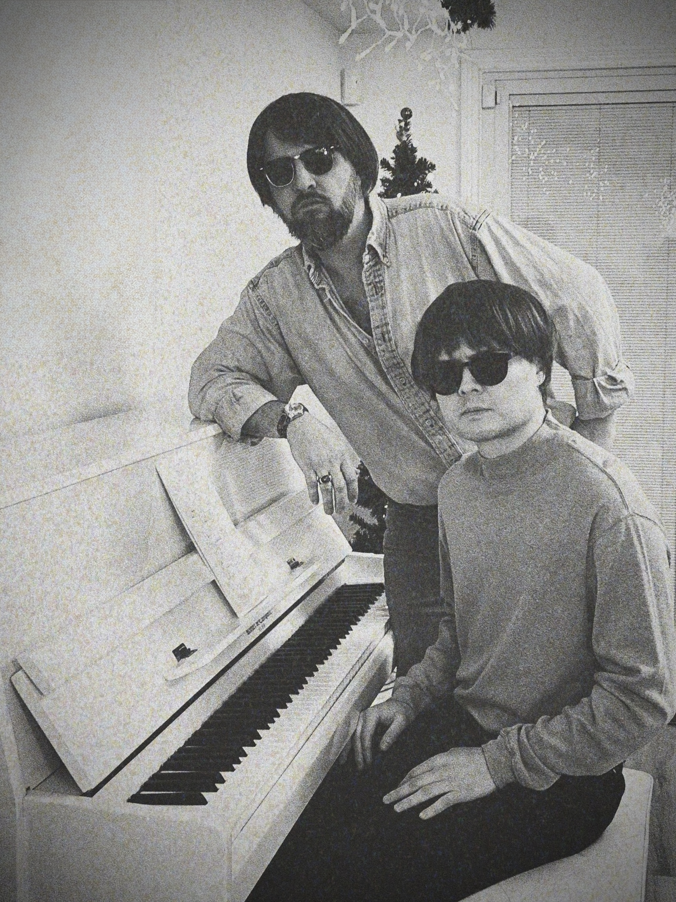
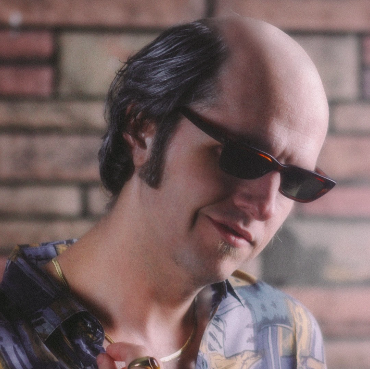

"Sir" Alan Frisbee is an American songwriter and folk musician, who fronted bands like; Alan Frisbee (Solo), The Pelts, Mama Plunkin’s Pickin’ Jamboree, and The Truckers Three (a trio that sang about trucks and truck stops and being truckers).
Alan was born in a one-room shack in Raccoon, KentuckyHe was a surprise, entirely unexpected. His brother, Rick, was born first, and Alan’s mother did not know there was to be another one. At the time of the twins birth, their grandmother, Bertha May, led a Sacred Harp chorus around the birthing bed, as the doctor looked up and said “we got another’n.” It was Alan. He crowned just as the fuguing voices reached their crescendo. The sound of music has been a part of Alan’s daily life ever since.
At the age of five, Alan won the Cream of Kentucky Holler Yodeling Competition, defeating 40-year-old ten-time champion Big Tiddy “The Throat” McClucky. Alan remains the youngest winner on record.
Throughout their childhood, Alan and Rick’s father, Fiddlin’ Frank Frisbee, was known as the best fiddler in eastern Kentucky. Instead of schooling, they would travel with their father to bluegrass festivals all around the region. They met so many of the folk greats, like; Priss Brine (Banjo/Vocals), Calhoun Prees (Vocals/Banjo), Queen Maggie Horton (Vocals), Sam Popper (Fiddle/Guitar), Todd “Two Toes” Tippet (Rhythm/Stomper). Fiddlin’ Frank believed that this would be a better education than any book or teacher or government organized school could give them.
When the twin brothers were about ten years old, their father put them together as a traveling family band. Alan played guitar and sang with his mother, Ethel. Rick played the washboard and spoons, and Frank fiddled, of course. They went from town to town, playing bar and barn dance as, Fiddlin’ Frank and the Frisbee Family Band.

One night in 1974, the frisbees had been playing a set of performances at a bluegrass festival outside Ashland, Ky, when Frank disappeared. Something he did often. But, on this night, Ethel had grown angry by his absence, and sent Alan and Rick out to find him, and “bring his sorry drunk ass home.”
Alan and Rick ran all around the grounds, and couldn’t find Frank anywhere. They came across a group of trailers. Where a lot of the traveling performers were staying. Alan and Rick snuck up to the back of trailer that still had its lights on. They peered inside the window. Their father was sitting at the edge of a bed crying. A half clothed woman was in the bed smoking a cigarette. Alan heard something coming from the other side of the trailer. He snuck off. “Where ya going?” whispered Rick. But, Alan was focused on that beautiful sound. As Alan tiptoed around the side of the trailer he could see a boy, about his age, wailin’ on a slide guitar. “Man! I like that sound,” Alan whispered to himself. Rick snuck up beside him. “Listen to that boy play,” Alan said to Rick.
Just then Frank stormed out of the trailer. The boy stopped playing and yelled “daddy!” As Frank stumbled off in the darkness. Rick said “what the heck he say?” But, Alan didn’t care, or even really notice. He thinking about that boy’s pickin’.
Alan stepped around out of the darkness, “don’t stop,” Alan said as he approached the boy. “Huh?” The boy said back. “Play on,” said Alan as he crept closer. The boy picked the guitar back up and began to play, Alan started to sing in a soft low voice. Rick shook his head and ran away after his father.
The boys played until the sun came up the next morning. Alan, turned to the boy and said “I better get back now, my names Alan.” The boy held out his hand and said “I’m Dan, Dan Child.”
Alan started running through the field back to where he was staying. He stopped and turned around. He called back “I think we should play together.” Dan gave him a thumbs up. Alan thumbsed up back then turned and started running again.
A month later, Dan showed up at the Frisbee family’s door, much to Franks surprise. Dan told them that his mama had died, so Frank let him stay. “What’s one more mouth,” he said to Ethel, “And, by the way, he’s just a boy.” Alan was ecstatic to have a brother that could match his own talents.
Dan and Alan spent every night working through new songs. They would travel and play bars at night and write during the day. They listened to everything they could find to expand their influences. They found bootlegs of Elvis and the Beatles and Sly Bob Mackentire, and Crash Bang Boom. Dan and Alan decided they need to start a proper rock band, so Alan recruited his twin brother Rick to play drums, and The Pelts were born.

Alan and Dan spent the following year shaping their sound, an unlikely fusion of bluegrass, folk, and a raw, new kind of rock and roll. After assembling about thirty minutes of material, they recorded their debut album Pelted in a single take at a local bluegrass radio station, WKYB. Eager to be heard, they mailed the tape to anyone who might listen. Rick, whose sideline in low-level drug dealing, would often travel to nearby towns and hollers, to do business. At many of the bars, there would be a rock show of one form or another. And, in his bag next to the drugs, Rick’d have a handful of tapes to quietly pass along to other bands and managers.
One night in Richmond, Virginia, he slipped a tape to the manager of The Trick Ponies. A week later, Alan got a call: if they could pay their way, The Pelts were invited to open for The Trick Ponies in South Bend, Indiana.
The Pelts’ success was sudden and, in hindsight, unsustainable. By 1980, they had toured the U.S., Europe, Japan, and South America. They opened for bands like Patty Pretty, Jawboned Brothers, Burt Shubert, and EST. They even plaid a show with Magic Bus, where ‘Bus Riders’ booed and through beer bottles at them. One bottle hit Rick in the head during the drum solo of “Salt in the Wound.” Rick got up mid song, jumped off the stage and beat the guy over the head with a drum stick. The fan needed 15 stitches.
Alan and Dan remained inseparable, while Rick, always a little wilder, often vanished into whatever nightlife was available. Though Alan and Rick had shared a steady childhood, the road gnawed at Rick’s edges. Drugs blurred the rest.
One night after a show in Lima, Peru, tensions finally snapped. During their set, Rick was dragging the beat. Dan tried to keep him on rhythm, but Rick was on another planet. Spaced out. Lost. Drifted. Halfway through the set, Rick ran off the stage through the middle of the crowd screaming, “Time to let him out!” Over and over. Alan and Dan scrambled through the rest of the show, stomping out the rhythm that had be left empty by Rick.
Back at the hotel, Dan and Alan found Rick stripped naked, passed out in the tub with a giant orange snake. Alan went down to the lobby to call the manager. He and Dan had decided earlier that night that if Rick was on drugs again, they’d have to finish the tour with someone else.
Dan looked down at Rick. He was pissed. Covered in piss. The snake hissed. Dan grabbed the ice bucket, now just cold water, and threw it on Rick. Rick sprang to. Gasping. Dan confronted Rick about his escalating behaviors. Rick, still rolling on what ever drug cocktail he was on, got up and tackled Dan into the hotel room. Dan pushed Rick off of him against the wall. A decorative Peruvian spear fell off the wall from the impact. Rick grabbed it and launched it Dan. Just as Rick let go, he realized what he had done. In slow motion, he watched as the spear struck Dan. The spear itself was blunt. So worst case it would only bruise. Rick took a sigh of relief. But, just then, Dan tripped on a wrinkle in the rug, after being struck. His legs twisted, step by step, as he tried to regain balance. Dan spun, hoping the wall would catch him, but instead his body propelled toward the French doors. Rick reached for Dan’s arm, as he fell out onto the balcony and over the railing. Dan fell to his death that night. Whether Rick intended it or not hardly mattered. The next morning’s headlines were merciless: FRISBEE MURDERS CHILD.
The Pelts were finished. Dan was dead, Rick went to jail and Alan was all alone.
The following year, after some reflection, Alan tried to put out a country western album, but much of the press was around his brother’s murder trial. And, the album was widely considered bad.
One night after leaving the courthouse, where Alan had sat for Rick’s trial, (not paying much attention, he was focused on a negative review of his album that he had been reading instead) Alan fell into an exposed manhole. During the fall Alan hit his head and passed out. He woke up two hours later, a bright light shining in his eyes, his head submerged, up to his ears, in a puddle of sewage and excrement.
Reeling from the loss, Alan attempted to launch a solo career, but media coverage of the trial overshadowed his efforts. One evening, distracted by a scathing review, he fell into an open manhole. He was discovered hours later by a crew of work men, the newspaper review drapped over his face, large bold faced letters "Frisbee Flops."
The accident left him partially deaf, with an intense ringing in his ears. Alan was able to hear only one frequency: 432 Hz, the so-called “frequency of healing.” Alan retreated to the Abbey of Gethsemani, living among Trappist monks for nearly a decade. There, pilgrims sought him out, believing his trance-like hums carried mystical powers. It is rumored a man with a gaping hole in the top of his head grew back skull matter (no skin) after receiving a blessing from Alan, though no formal documentation exists.
One morning, Alan miraculously regained full hearing and said, “Frisbee's back in the game.” Through the early 1990s, he recorded a series of solo albums that, while critically overlooked, cemented his status as a cult figure (a very very small cult).
In the late ’90s, Alan was knighted by the King of Palau in a private ceremony, earning the title Sir Alan Frisbee, which he has used ever since.
This site was originally built by second cousin Tom Diskiss, a fan and second cousin twice removed, who only agreed to hand over the domain after Alan showed up to a family reunion in 2004. Tom still updates the site today, under Alan's supervision — which is mostly done by fax.